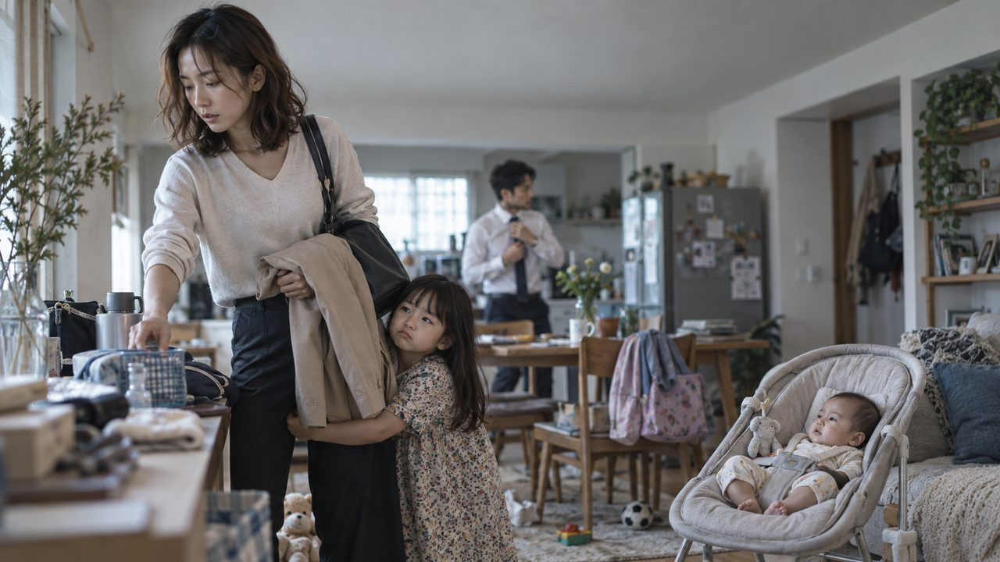
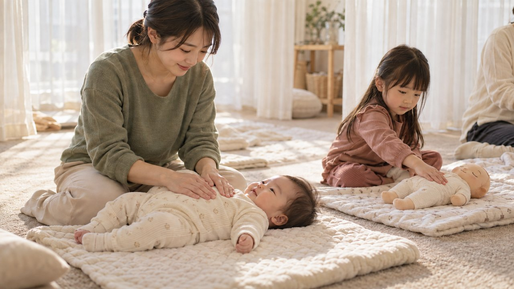

子育てへの不安
元のモックアップと比較
S010:00–0:04
ベビーマッサージサロン／新潟県長岡市稲保南1丁目244-9
ナレーション・BGM・テロップ入りの完成動画です。全体をご覧いただいた後、下の各シーンから気になる箇所をご確認いただけます。
① 各シーンの動画を再生 → ② 気になる点を修正メモに記入 → ③ ページ下部の「修正内容をまとめてコピー」から、いつものメッセージでお送りください。
メモはこのブラウザーに一時保存されます。入力だけでは制作担当に送信されません。別の端末には引き継がれません。
修正内容のまとめへ ↓「初めての子育てで不安なママ」と「きょうだいのいるご家族」の2つの物語を前後半で描き、最後にサロンへご案内する流れです。
各カードの画像は、完成動画から抜き出したスクリーンショットです。画像を押すと該当シーンを再生できます。元のモックアップ画像は比較用に開けます。シーン番号と時間を添えてご要望をお知らせください。
子育てへの不安
はじめての子育ての悩み
ベビーマッサージサロン Lienの紹介
ご夫婦でふれあうマッサージの時間
話を聞いてもらえる安心感
赤ちゃんを気にかけるお母さんと、寂しげなきょうだい

S060:23–0:27きょうだいも一緒に参加

S070:27–0:32お人形を使ったお世話体験
講師育成講座での実技指導
おくるみタッチケア教室
店舗情報・Instagramのご案内
ご提供いただいたお写真や参考資料をもとに、AI生成映像と編集で制作しています。先生の雰囲気やレッスンの動作など、気になる点がありましたら各シーンのメモにご記入ください。
業態が近い実在の広告動画を参考に、トーン・構成を組んでいます。
ユニ・チャーム
初めての育児の不安を静かなトーンで描き、後半で安心に転換する構成の参考にしました。
youtu.be/JnQhiHXGa68
AC JAPAN
きょうだいが増えることで家族の形が変わっていく様子の描写を参考にしました。
youtu.be/RqovF50ZyCU
Johnson's Baby
母親を否定せず寄り添うメッセージの伝え方を、ナレーション方針の参考にしています。
youtube.com/watch?v=nD42PJnPzH4
先生の雰囲気・マッサージの動作／テロップの内容と読みやすさ／ナレーション・BGM／最後の店舗情報・ご案内先をご確認ください。
メモはこのブラウザーに保存されます。制作担当へは自動送信されません。
コピーした文章を、いつものメッセージに貼り付けてお送りください。